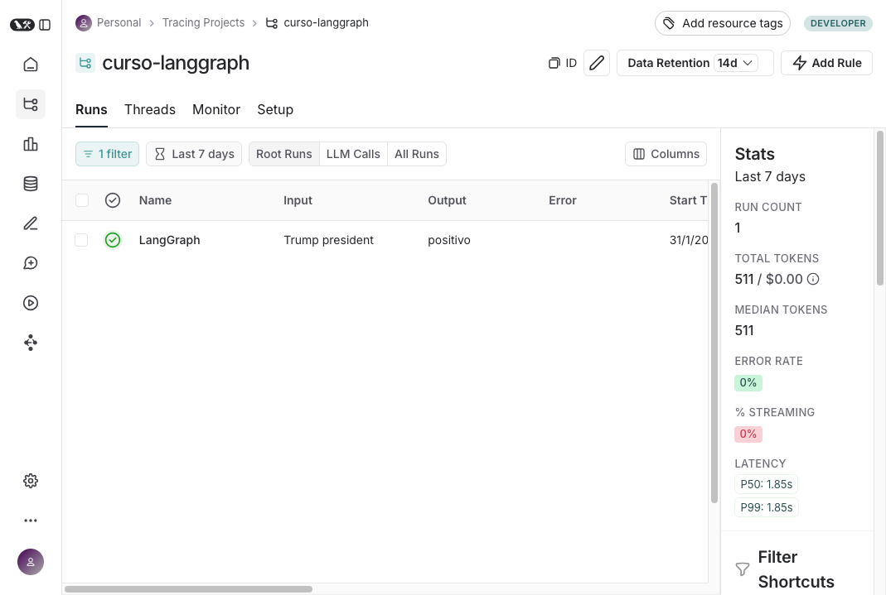
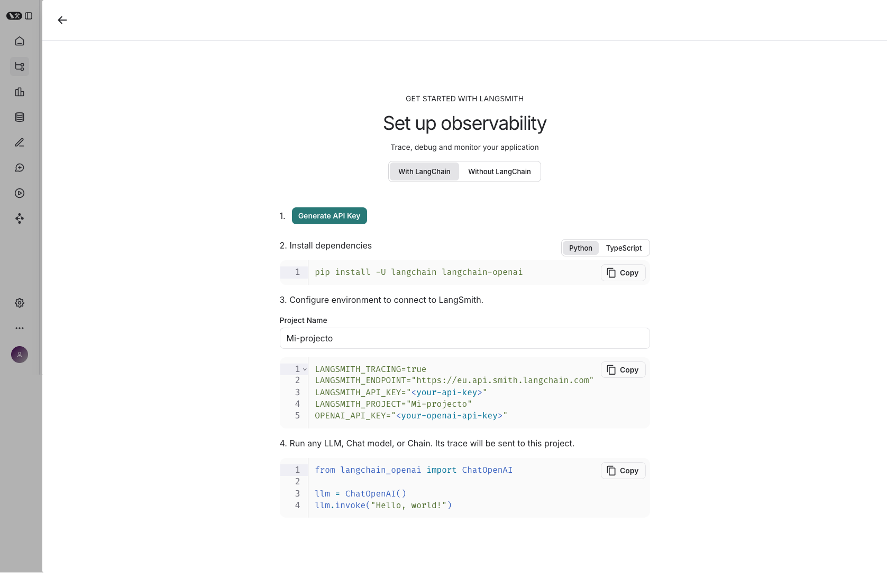
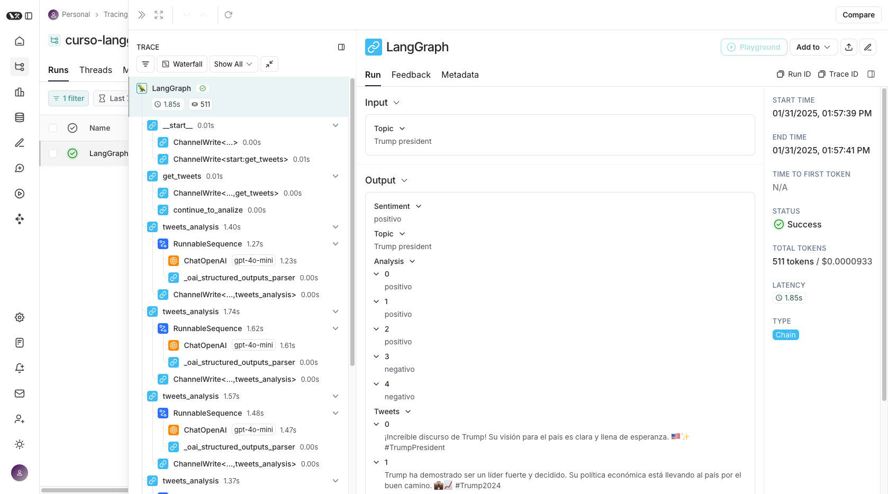

🛠️ Tema 9: LangSmith – Analizando y Optimizando Grafos
🌟 ¿Qué es LangSmith?
LangSmith es una plataforma avanzada de depuración y monitoreo diseñada para mejorar la observabilidad, evaluación y optimización de modelos de lenguaje y flujos de trabajo en LangGraph.
🔹 ¿Qué nos permite hacer LangSmith?
✅ Registrar y analizar cada ejecución de nuestro grafo.
✅ Evaluar métricas clave como tiempos de respuesta y eficiencia del modelo.
✅ Depurar errores y entender mejor las decisiones tomadas por el grafo.
✅ Optimizar la lógica de nuestro flujo mediante un análisis detallado.
LangSmith actúa como un registro interactivo que nos permite inspeccionar la ejecución de nuestros grafos con mayor granularidad, lo que facilita la optimización y el mantenimiento de flujos complejos.
🛠️ ¿Por Qué Usar LangSmith?
Cuando trabajamos con grafos complejos que involucran múltiples modelos de lenguaje, herramientas y flujos condicionales, es crucial contar con una herramienta que nos ayude a rastrear y analizar cada paso del proceso.
LangSmith nos permite:
✅ Auditar y depurar fallos en la ejecución de modelos y flujos de datos.
✅ Identificar cuellos de botella y optimizar la eficiencia del sistema.
✅ Comparar diferentes versiones de un mismo grafo para elegir la más efectiva.
En resumen, LangSmith convierte los flujos de trabajo en datos estructurados que podemos analizar para mejorar continuamente nuestras aplicaciones.
📊 ¿Cómo Se Ve LangSmith?
LangSmith ofrece una interfaz visual que permite explorar ejecuciones previas de nuestros grafos, visualizar métricas clave y analizar cada paso del flujo en detalle.
📷 Captura de pantalla de LangSmith en acción

🛠️ ¿Cómo Configurar LangSmith?
Para integrar LangSmith en nuestro flujo de trabajo, primero debemos configurar las credenciales y luego habilitar el seguimiento de logs en nuestros grafos.
📌 Pasos para la configuración:
1️⃣ Crear una cuenta en LangSmith en smith.langchain.com.
2️⃣ Obtener la API Key desde el panel de configuración.
3️⃣ Configurar la API Key en nuestro entorno.
4️⃣ Integrar LangSmith en nuestro código para empezar a registrar las ejecuciones.

LANGSMITH_TRACING=true
LANGSMITH_ENDPOINT="https://eu.api.smith.langchain.com"
LANGSMITH_API_KEY="<your-api-key>"
LANGSMITH_PROJECT="Mi-projecto"
OPENAI_API_KEY="<your-openai-api-key>"
🎯 Ejemplo Práctico: Monitoreo de un Grafo con LangSmith
Veamos cómo podemos conectar un grafo a LangSmith y analizar sus métricas.
📌 Pasos:
1️⃣ Definir un grafo y habilitar la integración con LangSmith.
2️⃣ Ejecutar el grafo y analizar su comportamiento en LangSmith.
3️⃣ Visualizar los logs y métricas obtenidas.

Tras ejecutar nuestro grafo con LangSmith, podremos inspeccionar cada paso del proceso y evaluar cómo se comporta nuestro flujo en términos de eficiencia y precisión.
✨ Conclusión
LangSmith es una herramienta fundamental para cualquier desarrollador que desee mejorar la transparencia, trazabilidad y rendimiento de sus grafos en LangGraph.
✅ Nos permite auditar y optimizar flujos de trabajo con datos estructurados.
✅ Facilita la identificación de errores y cuellos de botella.
✅ Mejora la eficiencia y la toma de decisiones en la construcción de modelos de lenguaje.
Si queremos llevar nuestros grafos al siguiente nivel, LangSmith nos proporciona la información necesaria para hacerlo de manera precisa y efectiva. 🚀
🎓 ¡Has Completado el Curso 2!
🎉 ¡Felicidades! Has finalizado el segundo curso de LangGraph, donde hemos aprendido sobre herramientas avanzadas como LangGraph Studio, paralelismo, subgrafos y optimización con LangSmith.
Hemos visto cómo construir grafos más eficientes, depurarlos y analizar su rendimiento para mejorar nuestras aplicaciones basadas en modelos de lenguaje.
Pero esto no termina aquí...
🚀 ¿Qué Viene en el Curso 3?
En el próximo curso, llevaremos LangGraph a un nivel aún más profesional. Exploraremos temas como:
✅ Memoria a Largo Plazo para mantener contexto entre sesiones.
✅ Almacenamiento en LangGraph Store para persistencia de datos.
✅ Despliegue de grafos en producción con LangGraph CLI y servidores locales.
Si estás listo para llevar tus conocimientos al siguiente nivel, te esperamos en el Curso 3. ¡Nos vemos allí! 🚀